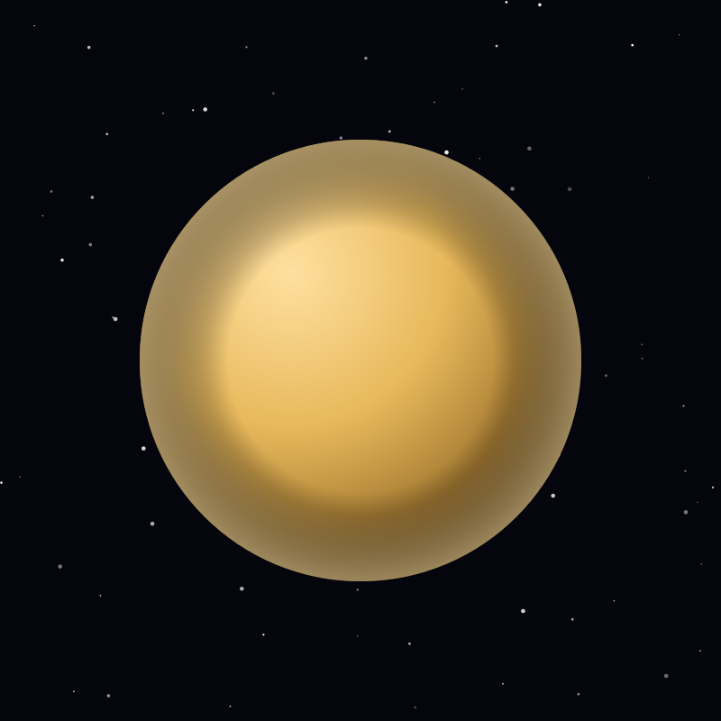

Moon
Titan
Saturn's largest moon and the only moon with a thick atmosphere, where rivers and lakes are filled with liquid methane.
Object 12 of 26

Key facts
- Distance from Earth
- 1.43 billion km (avg)
- Radius
- 2,575 km (largest moon)
- Surface gravity
- 1.35 m/s²
- Orbital period
- 15.9 days
- Surface temperature
- -179°C
- Atmosphere
- 94.2% nitrogen
- Surface liquids
- Lakes of methane and ethane
- Discovered
- 1655, Christiaan Huygens
Overview
Titan is Saturn's largest moon and the second-largest in the solar system — bigger than the planet Mercury. It is the only moon with a thick atmosphere, dense enough to stand on the surface without a pressure suit, though the air would be unbreathable.
A permanent orange haze of organic particles hides the ground from view in visible light, which is why Titan stayed a mystery until spacecraft flew past with radar and infrared instruments.
A Methane Water Cycle
At -179°C, methane plays the role water plays on Earth. It evaporates, forms clouds, falls as rain, carves rivers and collects in lakes and seas near the north pole. Kraken Mare alone is larger than the Caspian Sea.
Beneath the water-ice crust, evidence points to a global liquid water ocean kept warm by tidal heating and radioactive decay — another possible habitat, sandwiched between two very different chemistries.
Exploration
The Huygens probe landed on Titan on 14 January 2005, the most distant landing humans have ever achieved. It photographed river channels and shorelines during its descent. Cassini mapped 67 percent of the surface by radar over 127 close passes.
NASA's Dragonfly, a nuclear-powered rotorcraft, is planned to launch in 2028 and arrive around 2034 to fly between sites and sample the surface chemistry directly.
Why It Matters
Titan's atmosphere is rich in complex organic molecules — the same chemistry thought to have preceded life on early Earth, but frozen and preserved. It is a natural laboratory for prebiotic chemistry at planetary scale.
That combination of a warm interior ocean, an organic-rich surface and a stable energy source is why Titan is regarded as one of the most promising places in the solar system to look for life, or for the chemistry that comes just before it.